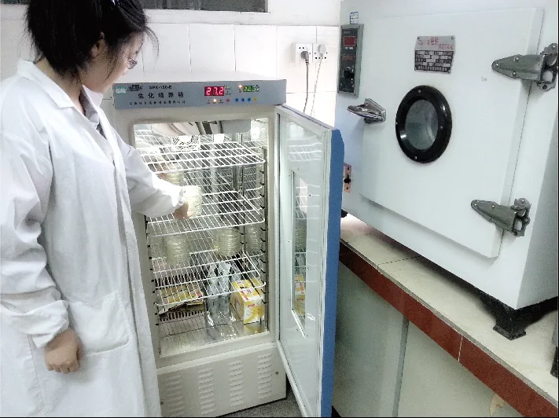

01
生产制造能力
粉末、浓缩、即饮和燕麦谷物产品的实体制造能力。
- 粉末产品生产
- 浓缩饮品生产
- 即饮产品生产
- 燕麦及谷物食品生产
- 不同包装形式
- 规模化生产能力
- 自动化与洁净生产环境

02
研发与配方能力
围绕客户应用、风味和商业要求开展研发与样品开发。
- 配方研发
- 产品风味调整
- 减糖方案
- 原料替换
- 餐饮应用测试
- 定制产品研发
- 样品开发流程

03
食品安全与质量管理
从原料验收到成品放行，对生产过程与食品安全风险进行持续管理。
- 原料验收
- 供应商管理
- 生产过程控制
- 成品检验
- 留样管理
- 批次管理
- 不合格品控制
- 食品安全管理体系

04
实验室与检测
通过内部实验室与第三方检测配合，支持产品验证和质量判断。
- 理化检测
- 微生物检测
- 感官检测
- 原料检测
- 成品检测
- 第三方检测配合

05
批次追溯
建立从原料、生产、包装到出货记录的批次信息链。
- 原料批次
- 生产批次
- 包装批次
- 成品放行
- 出货记录
- 追溯与召回管理

06
供应链与出口交付
协调生产、文件、出口、美国进口、仓储配送与客户交付。
- 订单确认
- 产品生产
- 文件准备
- 出口装柜
- 海运运输
- 美国进口
- 仓储与配送
- 客户交付